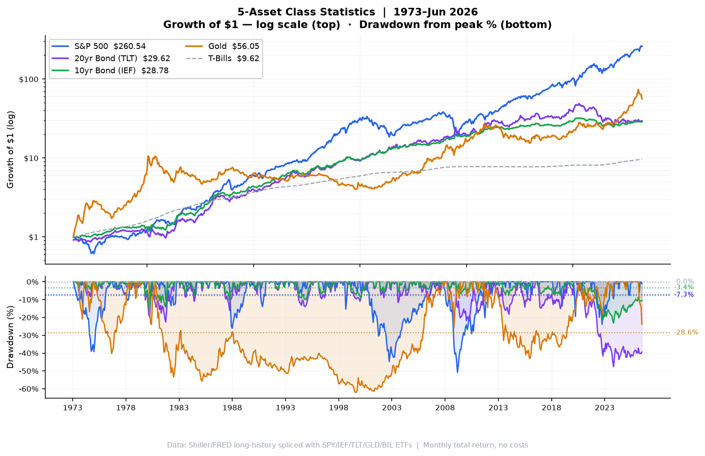
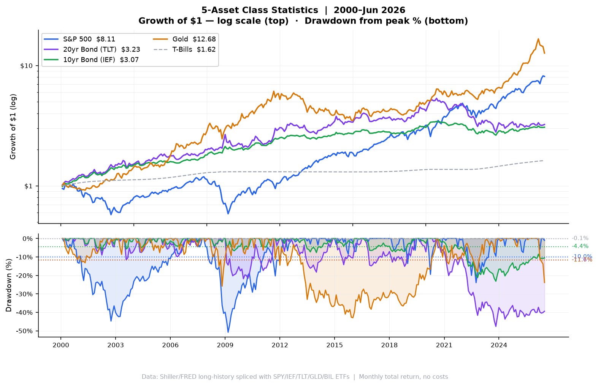
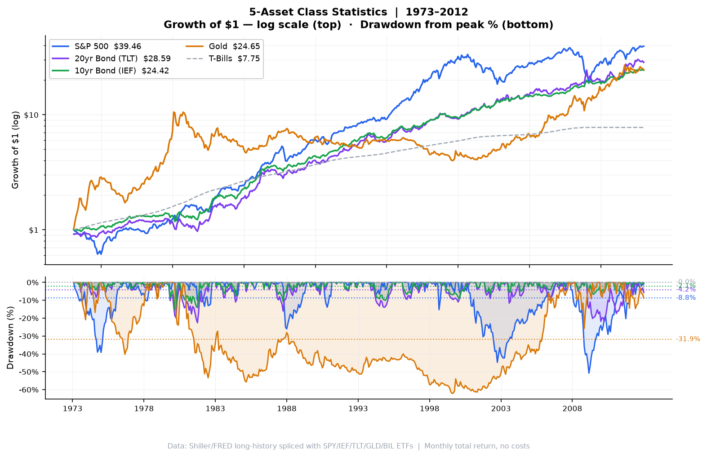

Three periods: 1973–Jun 2026 · 2000–Jun 2026 · 1973–2012 · Monthly total-return series, no costs or taxes · SPY = Shiller TR+ETF splice · TLT/IEF = FRED yield-derived total-return+ETF splice · GLD = LBMA gold spot+ETF splice · BIL = FRED TB3MS+ETF splice

| Asset | CAGR | Vol | Sharpe | Max DD | Ulcer | $1 → | Best Year | Worst Year | DD Peak | DD Trough | Duration | Recovery |
|---|---|---|---|---|---|---|---|---|---|---|---|---|
| S&P 500 (SPY) | +10.98% | 14.12% | 0.508 | -50.78% | 12.68 | $260.54 | +38.0% (1995) | -36.8% (2008) | 2007-10-31 | 2009-02-28 | 16m | 2012-03-31 |
| 20yr Bond (TLT) (TLT) | +6.55% | 12.06% | 0.234 | -47.61% | 12.99 | $29.62 | +45.7% (1982) | -31.2% (2022) | 2020-07-31 | 2023-10-31 | 39m | Not yet |
| 10yr Bond (IEF) (IEF) | +6.49% | 7.70% | 0.305 | -23.15% | 5.66 | $28.78 | +39.1% (1982) | -15.2% (2022) | 2020-07-31 | 2023-10-31 | 39m | Not yet |
| Gold (GLD) | +7.83% | 18.47% | 0.267 | -62.09% | 34.64 | $56.05 | +118.9% (1979) | -28.3% (2013) | 1980-01-31 | 1999-07-31 | 234m | 2007-09-30 |
| T-Bills (BIL) | +4.33% | 0.95% | 0.000 | -0.42% | 0.09 | $9.62 | +14.0% (1981) | -0.1% (2015) | 2009-10-31 | 2015-10-31 | 72m | 2017-08-31 |

| Asset | CAGR | Vol | Sharpe | Max DD | Ulcer | $1 → | Best Year | Worst Year | DD Peak | DD Trough | Duration | Recovery |
|---|---|---|---|---|---|---|---|---|---|---|---|---|
| S&P 500 (SPY) | +8.25% | 15.19% | 0.476 | -50.78% | 15.68 | $8.11 | +32.3% (2013) | -36.8% (2008) | 2007-10-31 | 2009-02-28 | 16m | 2012-03-31 |
| 20yr Bond (TLT) (TLT) | +4.54% | 13.09% | 0.264 | -47.61% | 17.48 | $3.23 | +34.0% (2011) | -31.2% (2022) | 2020-07-31 | 2023-10-31 | 39m | Not yet |
| 10yr Bond (IEF) (IEF) | +4.34% | 6.70% | 0.394 | -23.15% | 7.01 | $3.07 | +17.9% (2008) | -15.2% (2022) | 2020-07-31 | 2023-10-31 | 39m | Not yet |
| Gold (GLD) | +10.09% | 16.14% | 0.565 | -42.91% | 17.30 | $12.68 | +63.7% (2025) | -28.3% (2013) | 2011-08-31 | 2015-12-31 | 52m | 2020-07-31 |
| T-Bills (BIL) | +1.85% | 0.58% | 0.000 | -0.42% | 0.13 | $1.62 | +5.8% (2000) | -0.1% (2015) | 2009-10-31 | 2015-10-31 | 72m | 2017-08-31 |

| Asset | CAGR | Vol | Sharpe | Max DD | Ulcer | $1 → | Best Year | Worst Year | DD Peak | DD Trough | Duration | Recovery |
|---|---|---|---|---|---|---|---|---|---|---|---|---|
| S&P 500 (SPY) | +9.64% | 14.07% | 0.360 | -50.78% | 14.29 | $39.46 | +38.0% (1995) | -36.8% (2008) | 2007-10-31 | 2009-02-28 | 16m | 2012-03-31 |
| 20yr Bond (TLT) (TLT) | +8.76% | 11.64% | 0.337 | -22.59% | 6.53 | $28.59 | +45.7% (1982) | -21.8% (2009) | 1979-06-30 | 1981-09-30 | 27m | 1982-08-31 |
| 10yr Bond (IEF) (IEF) | +8.33% | 8.06% | 0.396 | -15.41% | 3.48 | $24.42 | +39.1% (1982) | -7.7% (1999) | 1979-06-30 | 1980-02-29 | 8m | 1980-05-31 |
| Gold (GLD) | +8.36% | 19.27% | 0.241 | -62.09% | 37.67 | $24.65 | +118.9% (1979) | -24.5% (1975) | 1980-01-31 | 1999-07-31 | 234m | 2007-09-30 |
| T-Bills (BIL) | +5.27% | 0.92% | 0.000 | -0.28% | 0.03 | $7.75 | +14.0% (1981) | -0.0% (2010) | 2008-09-30 | 2008-11-30 | 2m | 2009-05-31 |
CAGR = compound annual growth rate. Vol = annualised std dev of monthly returns. Sharpe = excess return over T-bills ÷ vol (dynamic T-bill rate; BIL Sharpe = 0 by construction). Max DD = maximum peak-to-trough decline. Ulcer Index = RMS of all below-peak deviations — captures depth and duration of drawdowns. $1 → = terminal value of $1 invested at period start. DD Peak / Trough = calendar dates of the worst drawdown episode. Duration = months from peak to trough. Recovery = first month wealth returned to prior peak ("Not yet" = still below peak as of period end). Data: SPY = Shiller TR spliced with SPY ETF · TLT = FRED DGS20 duration+convexity spliced with TLT ETF · IEF = FRED DGS10 duration+convexity spliced with IEF ETF · GLD = LBMA/WGC gold spot spliced with GLD ETF · BIL = FRED TB3MS spliced with BIL ETF.